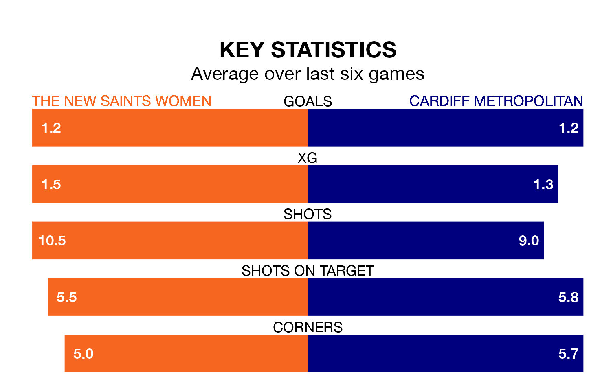

Sunday's early match sees two relegation candidates play each other, as sixth-ranked The New Saints Women host seventh-placed Cardiff Metropolitan.
The New Saints have picked up 17 points from their first 17 Welsh Premier Women's League games, with five wins and two draws.
That is two points more than Cardiff Metropolitan have collected, having won four and drawn three.
The New Saints are in terrible form in the Welsh Premier Women's League, with no wins and a draw from their last six games.
With a win and a draw over that period, Cardiff Metropolitan's form is better – they have taken four points from 18, compared to the New Saints' one.
With 21 goals in 16 games so far this season, the visitors are scoring at below the league average rate with 1.3 goals per game. And they are conceding more than average, letting in 36 goals at a rate of 2.2 per game.
The home side, meanwhile, are above average scorers, with 2.1 goals per game, compared to a league average of 1.8. They have conceded 2.9 goals per game.
In the last 10 years, The New Saints and Cardiff Metropolitan have played each other on nine occasions. The New Saints won three of them, Cardiff Metropolitan five, and they drew once.
On average, the New Saints scored 2.1 goals and Cardiff Metropolitan 2.9 in those matches.
Their last meeting was on March 10, when Cardiff Metropolitan won 4-1 at home.
The New Saints' last match was on March 17, a 3-0 loss against Barry Town United Women.
Cardiff Metropolitan lost 2-1 against Pontypridd Town last time out, also on March 17.
Updated: 10:19 (UTC), 22/03/24